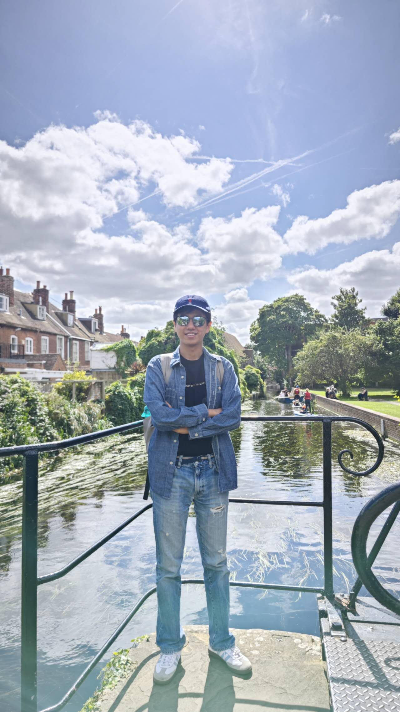

Yuze Fu
Welcome to my personal page.
View my work
Contents
About me

Biograpy
I am Yuze Fu, a dedicated second-year student at the University of Toronto Scarborough, pursuing an Honors Bachelor
of Science with dual specializations in Mathematics and Computer Science. My academic journey is driven by a passion
for problem-solving and a strong foundation in programming, particularly in C and Python. My experiences range from
winning a prestigious award in the National Olympiad in Informatics to developing creative solutions through
hackathons. Beyond academics, I have honed my skills in data analysis, front-end development, and even 3D modeling. I
am continuously expanding my knowledge in these areas and am particularly interested in applying this knowledge to
real-world problems, as evidenced by my participation in projects like developing a mentorship matching system for
university freshmen. With a CGPA of 4.0, I am committed to excellence and am eager to contribute to innovative projects
that bridge the gap between technology and practical application.
Skills
- Programming Languages: C, Python, R
- Data Analysis:
Proficient in data structures, algorithms, and elementary data analysis using R
- Front-End Development:
Skilled in HTML, CSS, and Figma for UI/UX design and personal website creation
- 3D Modeling: Basic abilities using Autodesk software
- Office Software: Expert-level proficiency in Microsoft Office Suite
- Project Management:
Experience in leading project teams and conducting background research and usability tests
- Hackathons and Competitions:
Participated in various hackathons and won awards in programming competitions like the National Olympiad in
Informatics
Projects
Automatic Lawn Sprinkler Irrigation System
July 2021
- Tools Used: Python, KNN (K-Nearest Neighbor), Barrel distortion correction, OpenCV
- Designed an automatic lawn irrigation system using machine learning in Python.
- Built the project in just two days as part of Intel AI for Youth Express.
- Implemented predictive algorithms to optimize water usage based on environmental data.
I’MENU – OCR and AI-Powered Restaurant Menu App
October 2023
- Tools Used: Python, JavaScript, OpenAI, OCR (Optical Character Recognition)
- Collaborated with a team during the Hack the Valley 8 hackathon to create an app that helps users better
understand restaurant menus.
- Integrated OCR to scan and interpret menus, and used OpenAI for providing menu descriptions and
recommendations.
Research Project: Ministry of Colleges and Universities’ Research Investments
April 2024
- Tools Used: R, Tidyverse, ggplot2
- Analyzed the “ontario-research-funding-summary” dataset using R programming and third-party libraries.
- Led a team of 3 students in writing a detailed report on research investments in Toronto.
MentorU – Mentorship Matching System
May 2024 – August 2024
- Tools Used: Figma, User Research, Usability Testing
- Developed an app interface using Figma to match university freshmen with mentors.
- Conducted background research through surveys and interviews to identify user needs.
- Improved user experience by iterating on the design through multiple usability tests.
Experiences
Teaching Assistant (CSCA67: Discrete Math) | University of Toronto Scarborough
September 2024 - December 2024
- Prepared and conducted weekly 1-hour tutorials to reinforce students' understanding of discrete math
through additional exercises and guided problem-solving.
- Held weekly office hours to provide personalized support, answering course-related questions and
clarifying complex concepts.
- Collaborated with instructors in grading quizzes, assignments, term tests, and the final exam, providing
detailed feedback to help students improve their performance.
Education
Honors Bachelor of Science (Co-op) | University of Toronto Scarborough
September 2023 – Present
- Specializations:
Mathematics Specialist (Comprehensive Stream), Computer Science Specialist (Comprehensive Stream)
- Minor: Economics for Management Studies
- CGPA: 4.0
- Honors: University of Toronto Scholar (2023-2024)
Relevant Coursework:
- Introduction to Computer Science I & II:
Developed proficiency in Python and C, including creating a 2048 game and analyzing the strengths of each
programming language.
- Discrete Mathematics:
Acquired foundational knowledge in logical reasoning, combinatorics, and graph theory.
- Calculus I & II for Mathematical Sciences:
Mastered fundamental calculus concepts with applications in mathematical sciences.
- Introduction to Data Science:
Practiced data analysis using R, focusing on variance, distribution, and advanced methods like decision trees and
random forests.
- Designing Systems for Real World Problems:
Engaged in an intensive design project focused on developing a mentorship matching system for university freshmen,
using Figma for UI/UX design and conducting usability testing.
Contact
- Address: 3050 Ellesmere Road, Toronto, ON, M1E 5E6
- Phone: (1)437-340-7710
- Email: yuzefu2004@gmail.com